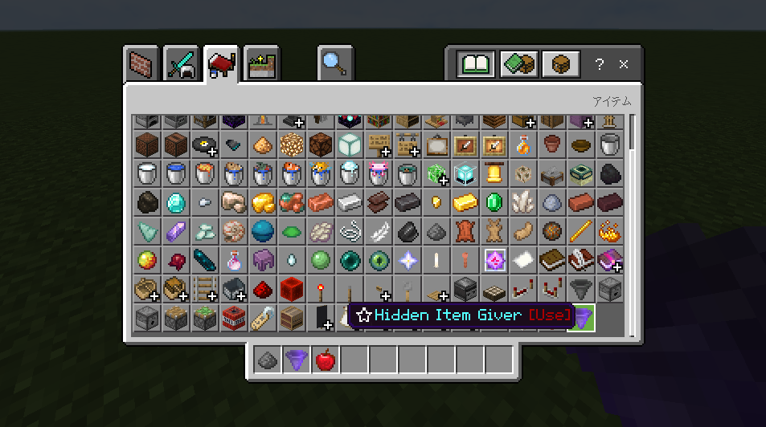
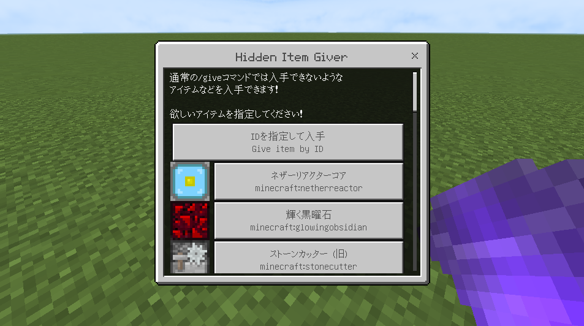

Hidden Item Giver
隠しアイテムを簡単に入手できる!!
隠しアイテムを簡単に入手できる!!
このアドオンの説明
Hidden Item GiverはアドオンでHack未使用で隠しアイテムを出すことができます!
このアドオンの使い方

2. 自分に「allow_hig」タグを付与する。
3. 輝くホッパーを使用して出したいアイテムを選択して入手!

ネザーリアクターコア、光る黒曜石、古いストーンカッター、カメラ、Info Update、不可視の岩盤など様々な隠しアイテムが出せます!
また、「IDを指定して入手」を押せば、任意のIDから入手することもできます！

インストール
2. ワールドのビヘイビアにHidden Item Giverを適用する(最上位じゃなくてもおk)
このアドオンはMinecraft v1.20.40以降じゃないと使えません！
v1.20.31にアップデートすればこのアドオンを使うことができます！！
ダウンロード
ここをクリックしてダウンロードする! (v1.1.0)